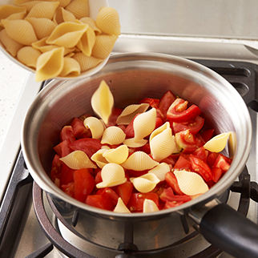

示範鍋具
2公升長柄鍋作法
- 大蒜切片，牛番茄切大丁，蘿勒葉切碎末。
- 鍋內倒入橄欖油，以中小火炒香大蒜片，加入番茄丁炒軟，使番茄略成糊狀。
- 加入貝殼麵、水，煮滾後蓋上鍋蓋，以小火繼續燜煮約20分鐘，每5分鐘掀蓋攪拌一下，至湯汁收八成乾。
- 起鍋前撒上鹽、黑糊椒調味。
- 食用時加些起司粉與蘿勒碎末，色香味俱全的茄汁貝穀麵令人食指大動！

材料
| 大蒜 | 3 瓣 |
| 牛番茄 | 4 顆 |
| 貝殼麵 | 160 公克 |
| 水 | 1 碗 |
| 蘿勒葉 | 數片 |
調味料
| 特級冷壓橄欖油 | 適量 |
| 鹽 | 適量 |
| 黑糊椒粒 | 少許 |
| 起司粉 | 適量 |